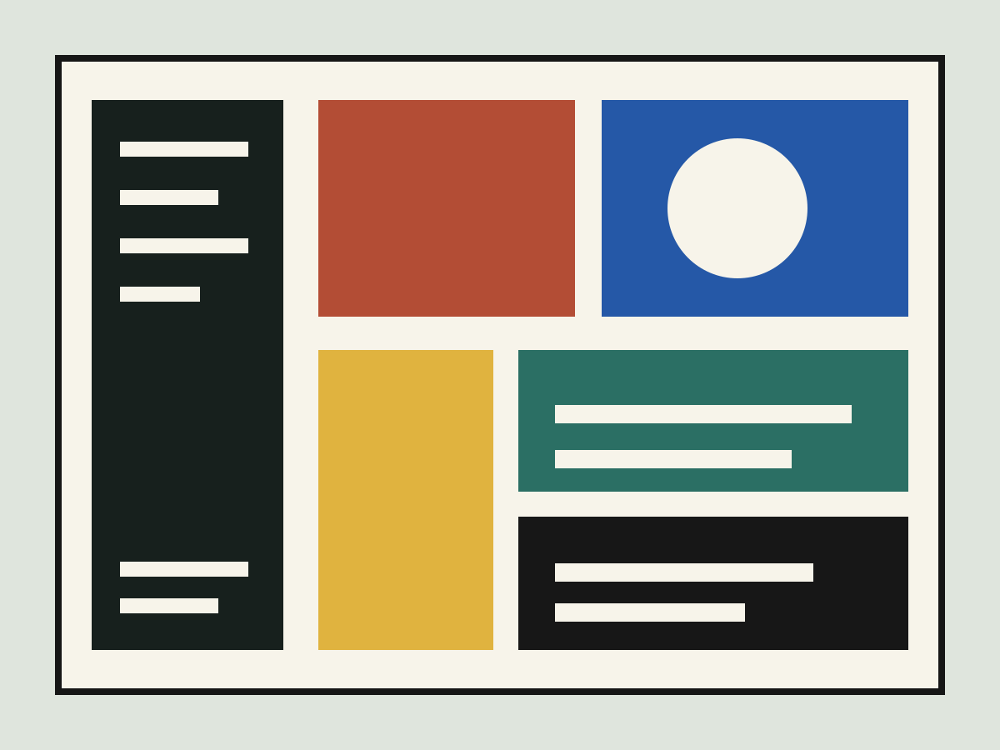
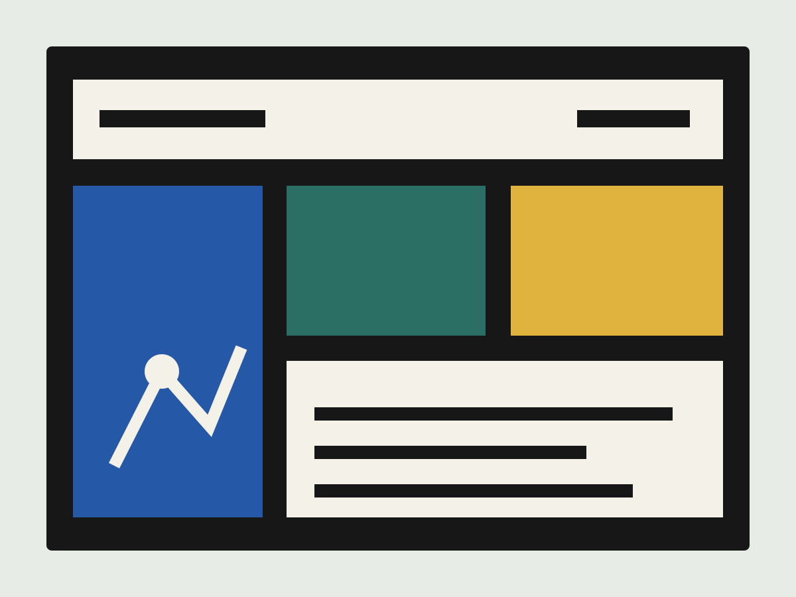

Archive Room
一个视觉档案浏览体验，在密集元数据与以图像为主的发现路径之间取得平衡。
- 范围
- UX 结构、界面设计、原型
- 角色
- 产品设计、交互语言

让档案既密集，又能被轻松进入。
界面把检索、筛选和图像预览拆成稳定区域，用户可以从主题、时间或视觉相似性进入内容。整体语言减少装饰感，把注意力留给档案本身。


一个视觉档案浏览体验，在密集元数据与以图像为主的发现路径之间取得平衡。

界面把检索、筛选和图像预览拆成稳定区域，用户可以从主题、时间或视觉相似性进入内容。整体语言减少装饰感，把注意力留给档案本身。
